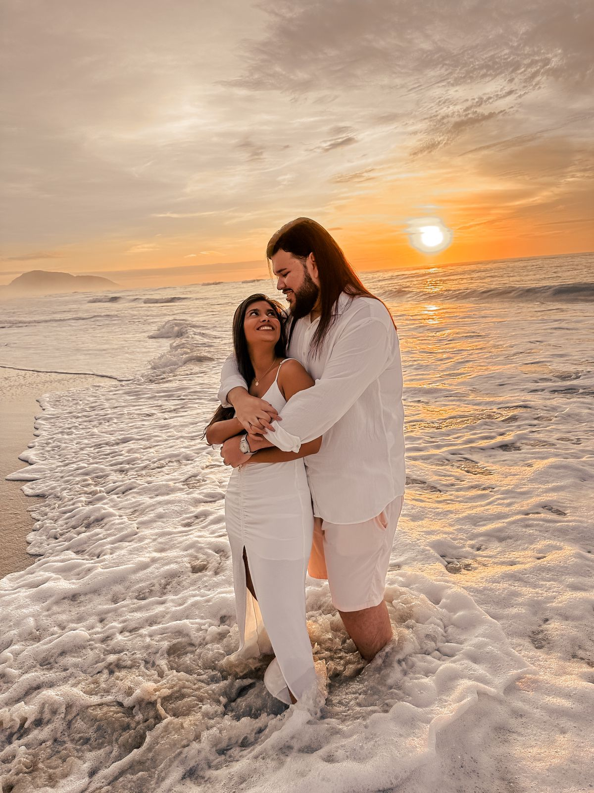
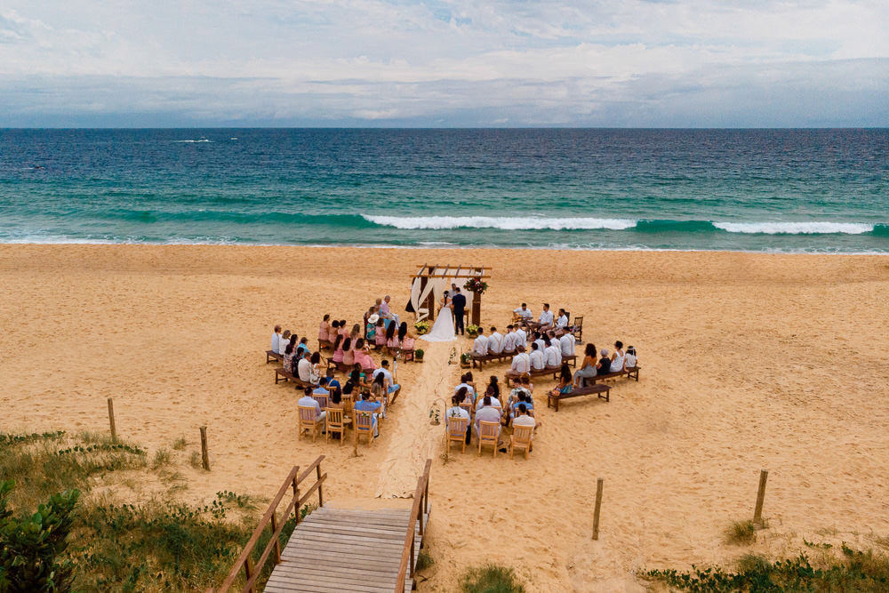

Desde o princípio, o casamento foi instituído por Deus para expressar amor, compromisso, fidelidade e cuidado mútuo.
A Bíblia narra que Deus pensou: “Não é bom que o homem esteja só”. E logo em seguida agiu: “Vou dar-lhe uma auxiliar que lhe seja adequada” (Gn 2,18).
Por isso, a partir da união matrimonial os dois passam a ser uma só carne (cf. Gn 2,24), um só coração. Em Deus, defenderão os mesmos princípios e valores, e cultivarão os mesmos sonhos e objetivos.
O homem e a mulher, ao unirem-se no matrimônio, representam a renúncia do egoísmo. Assumem um compromisso de se amarem e cuidarem um do outro e dos filhos que o Senhor lhes mandar. Tornam-se uma só carne. A partir de então, nada é especificamente de um só, mas dos dois.
Estamos muito gratos de poder dar esse passo especial em nossas vidas e se você esta aqui é porque faz parte da nossa história.
Nossa cerimônia será realizada na Praia do Estaleiro em Balneário Camboriú, endereço: Rua. Vereador Domingos Fonseca, 30, em frente a pousada Oce'anas, o casamento será iniciado sem atraso as 16hrs, pedimos a colaboração e atenção de todos com o horário, pois, estaremos dependendo da iluminação do ambiente para que a fotografia e filmagem fiquem favoráveis.
A cerimônia ocorre a 10 minutos do Indaiá de Itapema onde será a recepção/jantar, não se preocupe terá uma van após a cerimônia para levá-los a recepção do evento caso necessário. Segue o mapa da distância entre cerimônia e recepção.